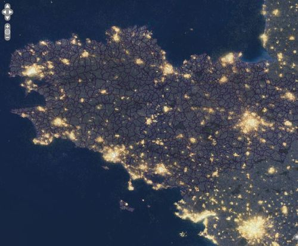
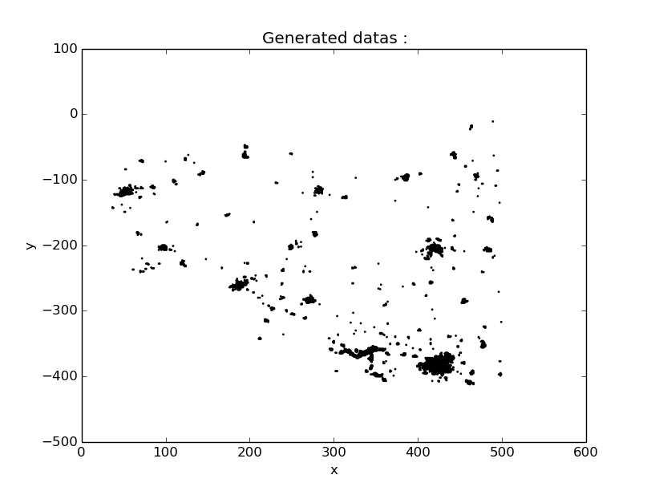
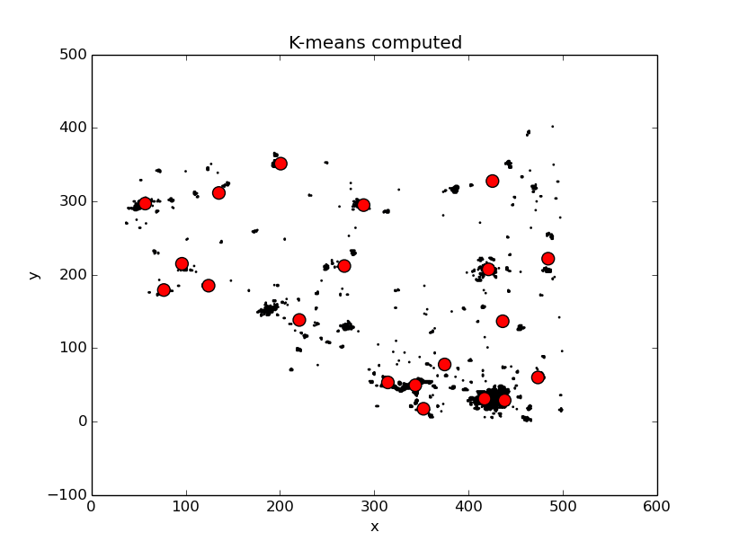

La Bretagne vue du ciel !¶
Le fichier genData.py permet de générer des données à partir une image satellite de nuit. Il faut pour cela placer l’image dans le dossier input et utiliser la commande suivante :
python genData.py -t picture -n nom_de_la_photo
La méthode utilisée est alors gen_picture_data.
-
genData.gen_picture_data(name)[source]¶ Génére les données en provenance d’une image placée dans le fichier input.
Parameters: name (String) – nom de l’image à analyser. Return type: void
Il est également possible d’afficher les données générées avec l’option -d :
python genData.py -t picture -n bretagne.jpg -d True
Par défault, si l’option -n n’est pas utilisé, l’image bretagne.jpg est utilisé. Voivi l’image originale :
Voici ensuite les données générées grâce à cette image :
Et enfin voici le résultat de kmeans sur ces images :
python kmeans.py -g False -k 20 -d True